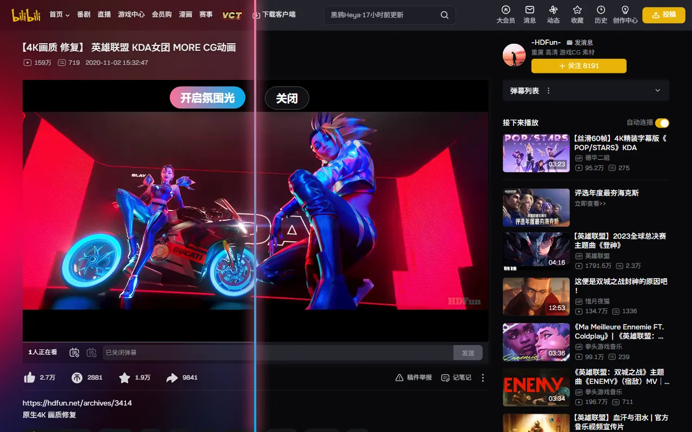
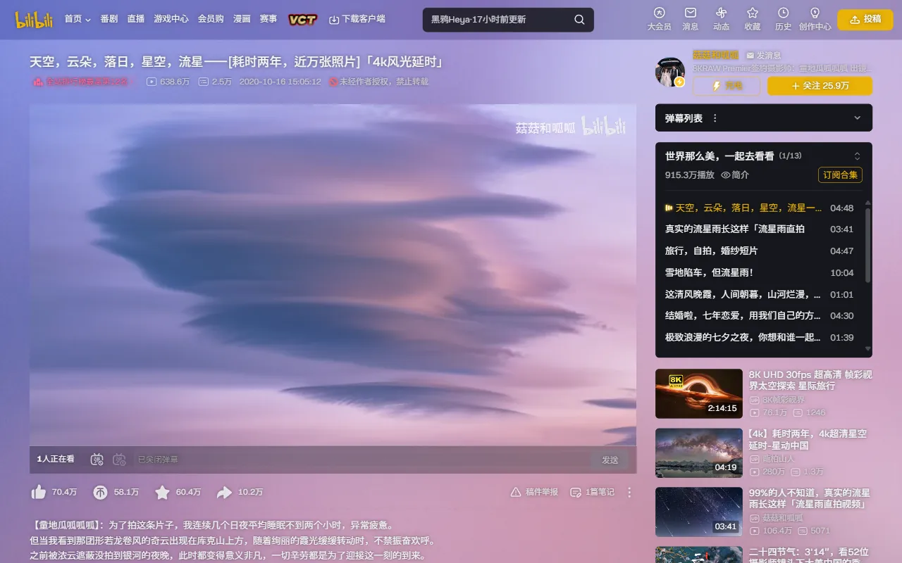
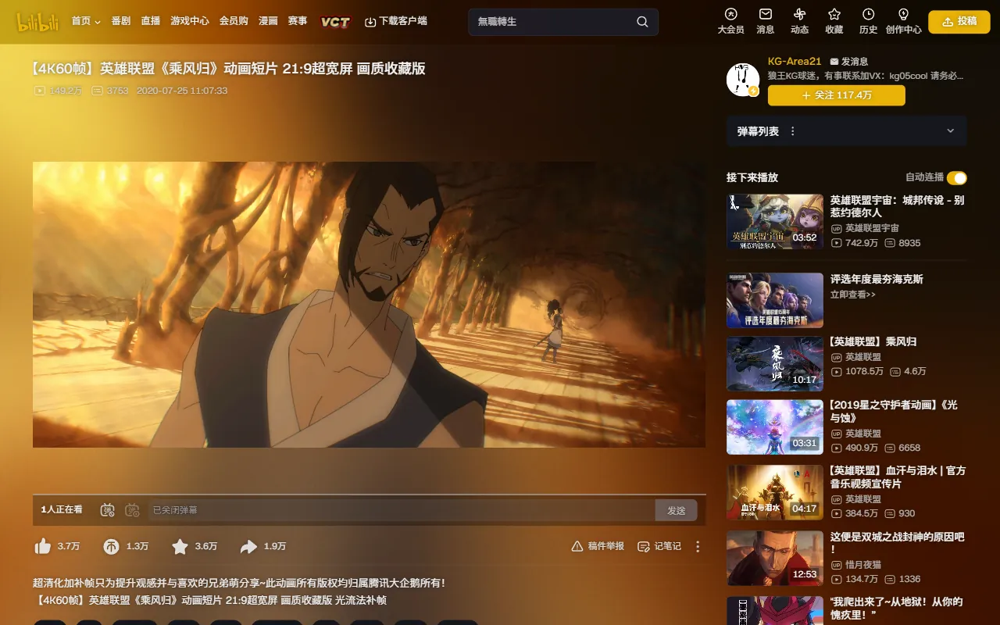
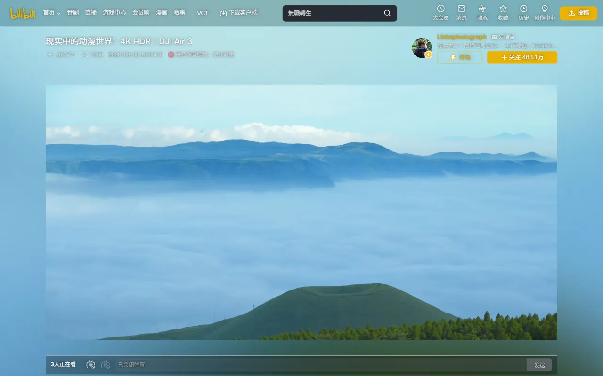
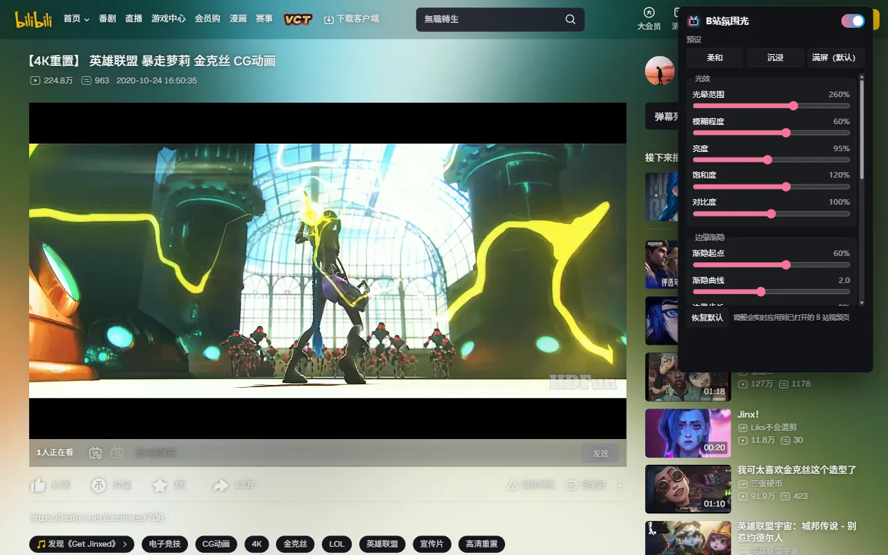

Chrome / Edge 扩展 · 免费开源
把 B 站视频的颜色，
铺满整个网页
B站氛围光会逐帧读取正在播放的画面，把边缘的色彩柔和地扩散到网页背景：画面是什么颜色，页面就亮起什么颜色。效果和 YouTube 上流行的 Ambient light 扩展（国内常被叫作“毛玻璃”）类似，现在 B 站也能用。
Edge 也从 Chrome 应用商店安装。打不开商店的话，可以手动安装。

功能
装好就能用，默认就是“满屏”效果。
氛围光
逐帧读取视频画面，把边缘色彩柔和地扩散到页面背景，并自然渐隐。
自动识别黑边
视频自带的黑边会被跳过，光从画面真正的边缘出发。21:9 电影、带黑边的 PV 也一样。
通透页面
页面切换为半透明深色主题，并加上文字阴影，内容依旧清晰。
跟随播放模式
普通和宽屏模式下生效；网页全屏、全屏和小窗播放时自动隐藏，不影响观看。
预设和参数
柔和、沉浸、满屏三个预设一键切换。光晕范围、模糊、亮度、饱和度、对比度、渐隐、帧率上限也能单独调，实时生效。
只在本地运行
画面只在内存里处理，不收集、不上传、不分享任何数据，只在本地保存你的设置。
效果
光的颜色和亮度跟着画面实时变化。




安装
装好后打开任意 B 站视频页就能看到效果。点工具栏上的扩展图标，可以开关氛围光、切换预设和调整参数。
手动安装
打不开 Chrome 应用商店时：
- 在 GitHub 项目页点 Code → Download ZIP，下载后解压。
- 地址栏打开
chrome://extensions（Edge 是edge://extensions），打开「开发者模式」。 - 点「加载已解压的扩展程序」，选择解压出来、里面有 manifest.json 的文件夹。
手动安装的版本不会自动更新，有新版本时需要重新下载。
工作原理
不需要灯带之类的硬件，全部在浏览器里完成。
- 把当前视频帧缩小，画到一块小画布上。
- 以视频为中心，把这一帧按越来越大的尺寸叠画多次，让边缘的颜色一圈圈向外延伸。
- 用渐变遮罩让光向页面边缘渐隐，再做模糊和调色，画到固定在页面最底层的画布上。
- 用
requestVideoFrameCallback跟随视频帧重绘，暂停或页面不可见时停止绘制。
整个渲染只用低分辨率画布，实测每帧主线程开销约 1–2 毫秒。思路参考了 Ambient light for YouTube（MIT 协议），代码针对 B 站独立重写，源码在 GitHub 上。
常见问题
会不会卡，费不费电？
光效只在低分辨率的画布上计算，结果本来就要模糊，看不出分辨率的差别。实测每帧主线程开销约 1–2 毫秒。暂停或切到别的标签页时停止绘制。设置里还可以限制帧率、降低光效的分辨率。
支持哪些浏览器？
Chrome 116 及以上和 Microsoft Edge。其他能从 Chrome 应用商店安装扩展的 Chromium 内核浏览器通常也能用，但没有逐一测试。
为什么全屏、网页全屏和小窗播放时没有光？
这几种模式下，视频要么盖住了整个页面，要么悬浮在角落，背后没有可以照亮的网页，所以自动隐藏。切回普通或宽屏模式就会恢复。
直播间能用吗？
目前只在 www.bilibili.com 的视频页运行，直播间（live.bilibili.com）不支持。
会收集我的数据吗？
不会。所有处理都在浏览器本地完成，读取的画面只在内存中处理，不保存，也不发送到任何地方。扩展只在本地保存你的设置。详见隐私政策。
和 YouTube 的“毛玻璃”扩展是什么关系？
YouTube 上的 Ambient light 扩展会把画面的颜色延伸到页面背景，国内常被叫作“毛玻璃”。B站氛围光参考了它的思路（MIT 协议），代码针对 B 站的播放器和页面结构独立重写，两者没有关联。